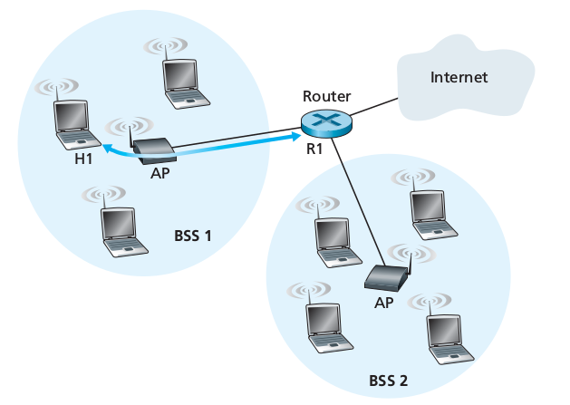
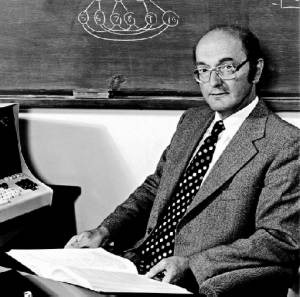
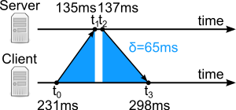

Simon Fink
I'm a Physics major attempting to finish a CS major this
year, with my only previous course being CSC 141. I am also
a senior. I enjoy piano, cooking, and progressive metal.
Oct. 4 Notes
Oct. 10 Notes
Oct. 11 Notes
Spanning Trees
Random Access Protocol
Assignment 0
Assignment 1
Assignment 2
Assignment 0
Clock Synchronization Quiz
Donald Davies Biography
WiFiDirect Tutorial
Assignment 1
Text Problems
Week Two Quiz
Wireshark Lab
Assignment 2
Wireshark Lab
Looking at 802.11 Frames
Using a packet sniffer doesn't solely reveal the inner workings of wired networks. WiFi networks have their own unique architecture, with protocol set by IEEE 802.11 specifications. WLAN networks are linked via access points (APs), each of which converts 802.11 frames into Ethernet frames which can be interpreted by a parent router. Each AP can link multiple hosts to a router; the branches consisting of these hosts, the AP, and the router are each known as subnets.
Packet sniffers operate over link layer transactions, and unfortunately, 802.11 drivers often lack the proper "hooks" that Ethernet drivers have to allow capture. There are workarounds for this, but for the purposes of this lab, a sample 802.11 trace has been provided.
- Launch Wireshark and open the provided 802.11 capture file.
- Highlight the very first frame. Each frame has space for three MAC addresses(technically four, but only when APs are linked directly), frame control tags that correspond to categories of messages, and a checksum. For the first frame, in the frame control field, you should see a type of 0 and a subtype of 8. This signifies a broadcast. Broadcasts are frames sent periodically by APs across 802.11 frequency channels. You'll notice that the destination MAC address is simply filled with "ff"s in every hexidecimal place. This means that the frame has no specific destination, and is simply being sent across the entire channel. When a 802.11 capable host enters the range of a network, passive scanning will pick up the broadcast and notify the user of the APs presence.
- Now, scroll down to around 24.82 seconds. Here, the host makes a request to an off network server. Look first at the TCP SYN packet. The transmitter address field will always contain the address of the currently transmitting device, and the receiver field will accordingly contain the address of the transmitted-to device. In this case, the transmitter is the host making the request (IntelCor_d1:b6:4f) and the receiver is the AP associated with that host (Cisco-Li_f7:1d:51). Notice that the destination field here is different. This is the MAC address for the parent router; when the AP converts the 802.11 data into Ethernet, it will use this field as the new receiver address. IP protocol data rides higher in the protocol stack, and once the packet reaches the router, it will be forwarded to the IP address of the server.
- Looking at the SYN ACK packet tells us a bit more about the addresses. When the parent router is involved, whether it be the source or the destination, it will always be indicated in those fields; in fact, these two fields are actually different names for the same field. Notice here that the source address is now occupied by the router.
- Finally, let's look at protocol for authentication. At t=49.58, the host requests to disassociate from the AP. It sends two messages: the first is an IP layer message to the parent router which removes it from the subnet, and the second is a frame directly to the AP to deauthenticate the host.
- After this, the host attempts to associate and authenticate with a linksys AP (Cisco-Li_f5). You can look through these attempts if you want; for whatever reason, there is never a reply from this AP. The host then authenticates once more with the previous AP. This process is much shorter and sweeter, consisting of only two exchanges at around t=63. It also includes another IP layer message to the router, requesting to be placed on the subnet again.
- Hosts can elect to actively scan instead of passively scan. These attempts are denoted by the probe requests you may have seen while scrolling through the trace. These play out in the opposite manner of passive scanning: the host broadcasts a request over several 802.11 channels and waits for a direct response from nearby APs.

Problems from the Text
C1.P24
This problem explores the comparisons between transmission delay and propagation delay. The transmission delay of a physical package is representative of the time taken to load the data onto the truck; this is likely negligible. The propagation delay of the truck, on the other hand, will be about a day. The propagation delay of a data link will be a number of milliseconds, but the transmission delay will be far longer. This amount of time will be equal to:
T = ( 40 TB / (( 100 Mb/s / 8 B/b) / 1,000,000 MB/TB )) x 86400 s/day = 37 days
Obviously, in this case, the time cost of a slow transmission delay far outweighs the cost of slow propagation.
C3.P45
The following overview will walk you through the steps to derive the average throughput of a TCP connection. The following notation will be used:
W: max congestion window size in number of segments
RTT: Round trip time of a segment in seconds
MSS: Maximum Segment Size in bits
L: Loss rate
TCP throughput can be approximated by estimating that transmission rate will bounce between W/2RTT and W/RTT, increasing linearly and then halving when triplicate ACK segments are received. Because the change in the rate is constant, the average rate is the average of these two values, or ¾W/RTT. Over a single cycle, a single segment will be lost (indicated by the triplicate ACKs). Considering this, the loss rate will be
1/(segments sent per cycle) =
1/(average rate)(time per cycle).
To find the time per cycle, consider that the rate increases by 1 segment every RTT, and that the difference between max and min rates is W/2 packets, yielding a time per cycle of RTT x W/2. But this isn't quite right, as the rate holds at the maximum value for another RTT before dropping, raising time per cycle to RTT x (W/2+1). Plugging this into our loss rate formula, we get
L = 1/(¾W/RTT)(RTT x (W/2+1)) = 1/(⅜W^2 + ¾W)
This is the correct value as indicated by the book. But if we want to use this value to calculate the average throughput, we need to note a tricky little detail. When W becomes sufficiently large, the second term in the denominator of L will become negligible. To illustrate this, assume a W of 1000 segments. 3W^2/8 = 375,000, and 3W/4 = 750. The second term changes our value of L by only 2 tenths of one percent. Knowing this, we can safely estimate that L = 1/⅜W^2, and by the same logic, time per cycle = W/2. Solving for W yields
W = (8/3L)½
Average throughput will be equal to:
(Bits per segment)(Segments sent per cycle)/(Average segment transmission rate)
Plugging in all our values, we get:
MSS*(1/2L)/(RTT*(8/3L)½) = MSS/RTT x (1/L)/(2/3L)½ = MSS/RTT x (3/2L)½
Quiz: Sections 1-3
Chapter 1
True or False: Transmission delay is the time taken for a packet to transmit across the physical medium.
False: This describes the propagation delay. Transmission delay describes the time it takes the data to be pushed into the network.
Name all five layers in the IP stack, in descending order.
Application, transport, network, link, and physical.
Chapter 2
Name 3 of the 4 error codes noted in the book, and their meanings (404 not included).200: OK. 301: Moved Permanently. 400: Bad request. 505: HTTP Version not supported.
Define the term "DNS Caching."
After a DNS request is made, the domain-name/IP information is stored locally at the client. The next time a request is made to the corresponding server, this information is used instead of making a new DNS request.
True or False: P2P networking requires no external server whatsoever.
False (sort of): P2P requires a tracking server to keep track of peers. However, the storage and congestion control required is miniscule, since that load is passed to the networked peers.
Chapter 3
Briefly describe UDP checksum protocol.Three random 16 bit numbers are summed, and this sums 1's compliment is taken. These four numbers are sent in the UDP header. if all of these numbers sum to 1111111111111111 at the receiver, the checksum is successful.
Name two advantages of UDP over TCP.
UDP does not throttle bandwidth, can support more simultaneous connections, and does not require a handshake to send data.
What are the two main transport layer error recovery protocols? Which of these methods does TCP use?
Go-Back-N, and Selective Repeat. GBN utilizes a timeout for each acknowledgement, after which it retransmits all unacknowledged segments. SR utilizes a timeout for all segments and sends acknowledgements even after a segment has been lost. TCP uses a combination of these, using cumulative acknowledgement like GBN, but also only retransmitting segments selectively, like SR.
What are the two ways that TCP recognizes a dropped packet?
Through either a timeout, or after three duplicate acknowledgements for a segment.
In what manner does the TCP congestion window grow? Linearly, exponentially, or some combination of the two?
A combination. The congestion window intitially grows exponentially, but begins to grow linearly after reaching the halfway point from where the last packet was lost.
A Lesson on Dijkstra's Algorithm
When thinking about traveling in a network, several questions naturally arise.
If you're leaving your home to travel somewhere you may not have been, you will
likely first seek, through whatever means, to find the shortest path to your
destination. This common query has relevance to many kinds of networks, and as
such, routing algorithms are employed to find solutions. A particularly well known
example of these is known as "Dijkstra's algorithm," conceived by Dutch computer scientist
Edsger Dijkstra in 1956.
Dijkstra's algorithm is a protocol used to find the shortest path between two points in a weighed graph.
Using one designated node as a starting point, the algorithm will iterate across the entire graph, finding
all shortest path data for the starting point. To understand Dijkstra's algorithm, let's start by looking
at some pseudocode.
node source = s;
node[] graph = [s, a, b, c...]
make queue q;
for node in graph {
node.distance = null;
node.previous = null;
add to q;
}
source.distance = 0;
do for each node in q {
node u = node with min source.distance;
for neighbors v of u {
if u.distance + pathLength(u, v) < v.distance {
v.distance = u.distance + pathLength(u, v);
v.previous = u;
remove u from q;
}
Dijkstra's algorithm starts at the source node, first checking all nodes surrounding and noting their respective path lengths. These path lengths are the defacto shortest paths to each of these nodes; after iterating through all nodes, the one with the shortest path length is queued next, and the same process is repeated. If a shorter path to a node that already has a "shortest path" is found, that value is replaced and noted in the queueing order. This process continues until all nodes have been visited. An example of the algorithm in action may prove helpful, so let's run through the protocol for the given graph:

- Starting at A, the two neighboring paths to C and D are noted. The path to C (distance = 1) is shortest, so it is queued next.
- At C, new paths are found to reach B and E, which are noted. A new path to D also exists, but as it is not shorter than the one previously found, the value is discarded.
- The function now moves to D, as it has the next shortest path in the queue. A new path to G is found, and noted.
- Node B is visited, which results in a path being found for F.
- Node G is visited. Because G's neighbor path to F is shorter than the one we just found from B, this value replaces the old one in the function, and its new parent is subsequently noted.
- Node E is visited. No shorter paths are found, so no values are updated.
- Node F is visited. No shorter paths are found, and because F is the last remaining node, the process terminates.
This process can also be illustrated using the following table (Notes that for each of the found nodes in the
table, the parent node is given, followed by the path length):
| Step | Queue | B | C | D | E | F | G |
|---|---|---|---|---|---|---|---|
| 0 | A | A,1 | A,2 | ||||
| 1 | AC | C,3 | A,1 | A,2 | C,4 | ||
| 2 | ACD | C,3 | A,1 | A,2 | C,4 | D,3 | |
| 3 | ACDB | C,3 | A,1 | A,2 | C,4 | B,6 | D,3 |
| 3 | ACDBG | C,3 | A,1 | A,2 | C,4 | D,3 | |
| 4 | ACDBGE | C,3 | A,1 | A,2 | C,4 | G,4 | D,3 |
| 5 | ACDBGEF | C,3 | A,1 | A,2 | C,4 | G,4 | D,3 |
By noting the parent in the shortest path at each node, a shortest path can easily be derived. Beginning at the destination node, the path can be found by working backwards, hopping from parent to parent, to the source.
Oct. 4 Notes
Day One
I chose to expand on 1.7.5, The New Millenium, as the statistics that this text are based on were taken in 2012. Each bullet point given had the potential for future addendum, and as technical statistics swiftly, inevitably change, I am highlighting some of the larger trends and changes in networking since the text's publication.
- 84% of households in developed countries have internet access.
- LTE exploded after 2012, developing from covering less than 1 billion to nearly 4 billion in 2016. 3G networks cover 2.5 billion more people. Over 90 percent of the developed world has mobile internet access in some form.
- Deployed in 2013, IEEE 802.11ac allows theoretical transmission rates of 1 Gbps, vastly overshadowing 802.11b's max speed of 54 Mbps (as mentioned in the book).
- In 2012, US average internet speeds hovered around 6.6 Mbps. By 2016, this figure had risen to 15.3 Mbps.
- Cloud computing has expanded rapidly. By 2017, it is expected to comprise the majority of all IT spending by organizations.
- IoT (Internet of Things) is a newer trend, describing the addition of internet functionality into existing technology. It is predicted that over 22 billion IoT devices will exist by 2018.
References:
Random Access Protocols:
ALOHA and Efficiency
The division of bandwidth between competing nodes must be handled at the link layer. One class of protocols that handles this is called Random Access, and as its name implies, utilizes probability to ensure proper data handling. Like TDM, frames are sent over single timeslots. These timeslots are synchronized across the network, so that each discrete frame begins simultaneously at all nodes. Nodes may send frames on demand, without limitation, so when networks consist of multiple nodes, collisions are inevitable. When these collisions occur, each node has a set probability, p, that they will retransmit their data during each subsequent timeslot. When the frame is successfully transmitted, retransmission will stop.
One of the simplest implementations of RAP is slotted ALOHA, which adheres to the previously defined rules with little modification. To find the efficiency of this protocol in larger networks, we must first find the ideal probability, p*. The probability that a node will successfully retransmit is equal to p multiplied by the probability of all other nodes not retransmitting, or $P = p ( 1 - p ) ^ {N - 1}$. To utilize our maximum bandwidth, we only need a single node to successfully retransmit at a time, given by the previous function multiplied by the number of nodes, or $P_t = Np(1 - p)^{N-1}$. Let's investigate the properties of this function. We want to find the local maxima between 0 and 1, so let's try taking the derivative: $$P_t' = N (1 - p )^{N-2}(1 - pN)$$
We're interested in the points where $P_t' = 0$. Thus, we can divide out the first part of the right side of the function, leaving $1 - pN = 0$, or $p = \frac{1}{N}$. Thus, as N grows to infinity, p reduces to zero. Now we can find the efficiency. We now know that $nP = 1$, so our function reduces to: $$P_t = (1 - p)^{N-1}$$
We also know that $p = 1/N$. Substituting this into our equation and taking the limit as N goes to infinity, we get: $$\lim_{N\to\infty} (1 - \frac{1}{N})^{N-1} = \frac{1}{e}$$
Spanning Trees
In many broadcast protocols, such as RPF, the proliferation of packets is complete and safe from broadcast storms, but may be inefficient. Despite the fact that links not on the shortest path go unnoticed, packets are still broadcast to all adjacent routers; even to deaf ears, bandwidth is bandwidth. To stop this unchecked flow in practice, a spanning tree may be utilized. Spanning trees prevent redundant packages by making an abbreviated graph, including all nodes and only one edge connecting each of them. A broadcast emnating from any of the included nodes will know to travel only to the adjacent nodes in the spanning tree, and to ignore any edges that are not noted as such.
The first, and most pressing issue in the utilization of spanning trees is that of their creation itself. Several algorithms exist that might serve our purposes. The only one mentioned in the text is known as the center-based approach. The protocol is as follows:
- Establish a single node to be the "center." This will serve as the root of the spanning tree.
- Tree-join messages are sent from every node in the graph through adjacent links. Nodes one hop from the center will join the tree first.
- The nodes now newly part of the spanning tree will act as hubs for the two-hop nodes, accepting their requests and incorporating them into the tree. This continues ad infinitum.
Evidently, this algorithm is extremely simple. Another algorithm that might be used to create a spanning tree, one not mentioned in the text, is called a breadth-first search. BFS was initially created in the 50's by E.F. Moore to find the shortest route through a maze, but although it is primarily used to measure path length in unweigted graphs, it just happens to yield a very nice tree with only one link connecting each node. The protocol for this is as follows:
- Start again from a single root node. Create an empty queue for later use.
- Search for all adjacent nodes. For each node found that is not yet part of the tree (currently, all of them), append them to the tree, mark the current base as its parent, and then add them to the queue.
- Once all adjacent nodes at the root have been dealt with, go to the next node in the queue and repeat steps two and three.
Donald Davies
Pioneer of Packet Switching
Core to the inner workings of the Internet is the concept of packet switching; the versatility and efficiency of such a system, as opposed to circuit switching, makes such a massively complex network possible. This concept was not birthed wholly in the mind of one, and in fact, many researchers working just before the advent of the Internet had similar ideas. Among the most notable of these researchers was Donald Davies, a Welsh computer scientist who went on to coin the term "packet switching" itself.
Davies was born in Treorchy, a small village in the Rhonnda Valley of Wales, in June of 1924. Despite a modest upbringing, he went on to attend the Imperial College in London where he received subsequent BSc's in Physics and Mathematics, both times receiving the highest honors. During his last year of schooling, Davies attended a lecture by John Womersley, head of the mathematics division at NPL (National Physical Laboratory), where he first learned of the facility's emergent computer research. After graduating, Davies NPL's research team developing the ACE computer, a project led by Alan Turing. There was little comradery between Turing and Davies. The young researcher, hoping to achieve Turing's respect, elucidated several mathematical errors in the paper proposing the "universal Turing machine." "I went along to tell him and I was rather cock-a-hoop ... he was very annoyed," Davies later recounted.
The ACE project proved overambitious, but Turing departed, Davies stayed on to lead the development of a smaller device, the Pilot ACE, known primarily as the first computer in London and the basis of several successful commercial spin-offs.. Davies would only invest more time into the development of computer software, developing programs for simulating road traffic and translating technical Russian to English. He advanced quickly through the ranks of NPL, becoming the technical manager of their Advanced Computer techniques division in 1963 and subsequently leading the entirety of the computing division in 1966.
After his promotion, Davies steered the department towards a problem he'd witnessed during a visit to MIT in 1965. It was here that one of the first computer networks had been instituted, based on circuit switching technology; students could sit at a personal terminal with a direct connection to the mainframe, and reserve a fixed percentage of networks bandwidth to issue commands. Because the students spent so much of their time thinking, and so little time actually inputting commands, much of the bandwidth went unutilized. Davies sought to rectify this by designing a system around the bursty nature of human communication, reducing the multiple parallel connections to a single, shared link and splitting the messages sent through it into discrete packets. He called this system "packet switching," and lofty plans to incorporate it into the national telecommunications infrastructure. Despite successful trials in an experimental network at NPL, the British government resisted Davie's ambitions for many years. Before any further progress was made in the UK, DARPA researcher Larry Roberts decided to incorporate Davie's research into his own fledgling network, Arpanet, a prototype that paved the way for the future development of the internet.
After relinquishing his position at NPL in 1979, Donald Davies continued private research in the field of communications, focusing the bulk of his efforts in network security. After his retirement in 1984, he was known for some time as a great authority on wartime cryptography, a natural consequence of his knowledge of computer history and experience in security.
Davies passed away in May of 2000, and was survived by his wife of 45 years, Diane Burton, and their three children.
References:
Clock Synchronization
A Problem in Packet Switching Delays
This past Summer, I worked on a project for the Physics department
involving audio phased arrays, a technology that requires extremely
precise synchronization between multiple devices. Researching solutions,
I discovered that there are inherent issues with packet based networking
that make precise synchronization impossible. These problems are explainable

using concepts in section 1.3 of the textbook.
For the sake of this exercise, Processing, queuing, transmission, and propagation
delays will be labeled P, Q, T, and L, respectively. To make the exercise less
infuriating, you may use D as the sum of these delays. To label delays pertaining
to an outgoing message, type D1 and to label incoming delays, type D2.
Answer:
Tutorial
WiFi Direct Tutorial
For this tutorial, I'll be walking you through a brief look at the foundation of Android WiFi Direct Application
layer protocol. This is part of a Networking class, not an Android Programming class, so I'll provide the basic framework
for the app. You may be prompted to provide a couple of examples of code to finish the app. Here are a couple of basic Android
programming terms that will be helpful to know:
Activity: Each new, interactable screen a user sees has an underlying "activity." Code written in activities dictate each discrete action a user can make.
Broadcast Receiver: A service that listens over the app's WiFi Direct channel and sends commands to an underlying activity after certain events occur.
You'll be looking through a series of in app steps that will end in a functional WiFi Direct app. This app will send basic messages,
but can be easily modified for sharing other types of data.
- In the provided folder, navigate to app/src/main/java/com/example/simplewifidirectchat. This contains all of the core java files for the program. MainActivity.java contains the code for the main screen of the app. The OnCreate method is executed when the app starts up. There are three core Objects and one core Class. You'll see the former of these initiated here: the WiFi P2P Manager, the Channel, and the Broadcast Receiver. You can look at the core of the Broadcast Receiver class if you'd like; it's an always-on service that listens for specific state changes. We'll now follow the path around the app.
- The app has an options menu that initiates the connection. Scroll down to the bottom of the class, and look for the OnOptionItemSelected method. When a certain icon is chosen (the only icon in this case), a linked activity that searched for nearby devices will be launched. After searching, you'll be able to choose from a selection. The chosen device info is forwarded to the connectDevice method.
- This method extracts some important information from the raw device data. We'll take the MAC address and some configuration info and send them to a series of client connect threads.
- The client will connect through ConnectedThread. A new socket is created, with pointers to the Server's MAC address and the port to connect to. Specify this port here, after the comma following the address in the socket.connect method. You may use any unused port. Keep in mind you'll be initiating this port on the Server thread, so remember this number.
- The Server initiates a similar thread, but only needs to specify a port number and wait for the client to connect. In mConnectServerStream, there is a declaration for a new ServerSocket object. In the empty parentheses after ServerSocket, type the same port you specified for the client.
- Your devices should be able to connect now. Both the Client and Server threads are still running. When both of them started, they set up input and output streams. Each has an underlying buffer of an array of bytes. Within the declaration, specify the size of this buffer. A large buffer size will reduce the probability of packet loss, but a smaller buffer size will reduce queueing delay (A power of two is pretty standard).
Oct. 10 Notes
UDP Highlights
Although UDP is less reliable than TCP, it still finds use in many applications where its flexibility, speed, and lightweight nature outweigh its inherent flaws.
- UDP is no frills, and as such, there is no throttling of its handled messages. TCP attempts to handle congestion through the restriction of bandwidth, but any messages sent through UDP will be immediately handled. UDP can also send messages, as needed, in immediate succesion, where its counterpart would require acquisition confirmation after each message before sending the next.
- UDP establishes no consistent connection, and so no tracking of connection state is required. This necessity limits the number of possilbe concurrent TCP connections, a weakness UDP does not share.
- UDP uses significantly less header space than TCP (8 to 20 bytes, respectively).
Applications that often utilize UDP include media streaming services, routing protocol, network management, and DNS.
UDP Checksum
Because UDP operates independently from lower level protocols, it cannot guarantee that any of these will provide their own error detection. UDP provides its own in the form of an 8 byte checksum. At the message source, three random 16 bit numbers are added; the 1's complement* of this sum is calculated, and then appended to the segment. When the message arrives at its destination, the receiver sums all of the numbers. If this yields a new 16 bit number of all 1's, the checksum is successful.
Thoughts: Liabilities?
It seems as if it might be possible that the checksum would yield a false positive under some, rare circumstances. What if an error causes differences in both the sum and the complement, such that said errors cancel? What if the bits in the segment sections surrounding the checksum have been altered, while the checksum itself remains intact?
*The 1's compliment of a binary number is simply a conversion of all of its 1's to 0's, and vice versa.
Oct. 11 Notes
TCP - Timeout Calculation
TCP is, at its heart, an rdt protocol, and so it has a set 'time-out' period after which it will retransmit the previous segment. The time chosen for this interval is not immediately obvious; it clearly must be greater than the expected round trip time of the segment, but how does TCP calculate this, and how long beyond this time should TCP idle? THere must be some compromise, as too little time may cause recurring retransmissions while confirmation is in transit, but too much time will stall transmission longer than necessary and reduce throughput.
TCP has a series of algorithms to achieve this compromise. The first is a weighted function utilized to calculate the estimated RTT, while the second calculates the average deviation of the RTT; the timeout duration is acquired through the repeated iteration of these functions.
These algorithms are as follows:
RTT Algorithm
εn = (1 - α)εn-1 + αsn
Deviation Algorithm
σn = (1 - β)σn-1 + β|sn - εn|
In the above formulas, ε represents the estimated RTT, s represents the measured RTT, and σ represents the deviation. α and β are both unitless weighting factors (by convention, 0.125 and 0.25, respectively). There is an equivalence between ε and s here, as ε0 must equal s0 as the basis of fucture iterations. A little algebra will yield an expansion of the previous first algorithm:
εn = (1 - α)Ns0 + Σ (1 - α)n-1αsN-(n-1) + αsn
The final timeout interval is calculated through the following equation:
T = εn + 4σn
I could express this function in terms of the measured RTT as well, but frankly, I would rather not.